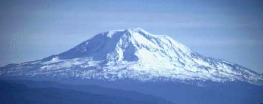
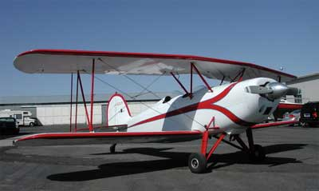
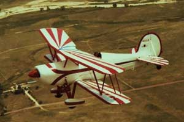
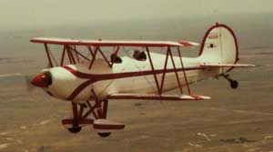
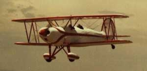
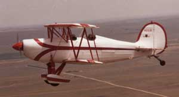
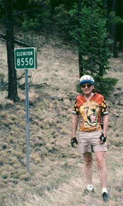
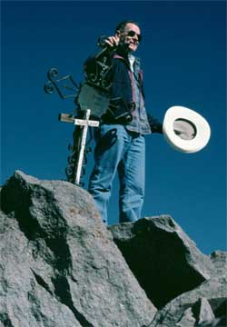
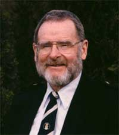

LynnBuchanan.com
Below....
Mt. Adams winter climb
Great Lakes Biplane
Mt. Adams mass climb

Mt. Adams, Washington
Another Mt. Adams climb
Some website mountain climbing stories start at the website.
First my younger brother talked me into having a website of my own, because computers attracted the younger sorts first, just like automobiles did back when horses were the more sensible means of travel. They still are.
Then the traditional matter of there still being only 24 hours per day, despite the advantages of computers, facilitated my website languishing with scant material, not as exciting as younger brother preferred. That annoyed him sufficiently over the years that he finally got around to writing one of my climbing stories, this one, for my adventure page. All things come to those who are patient.
But because he had to tell one of my climbing stories, not any of his, he had to rummage through his mental archives to find a story way back when we climbed together, before he ran off to Alaska. Nice thing about these older adventure stories, no one else can remember the details to dispute them.
There we were, mind you, and it was desperate indeed, albeit as usual. It was in the dead of winter, in the heart of the Cascade Range, in the wilds of Washington, way back in the 60's, when mountain climbing was real mountain climbing, and majestic Mt. Adams loomed on the western horizon, enticing all who gazed upon its crystalline white glacier-clad slopes, or something like that.
Mt. Adams, at 12,276 feet (3,742 m), is the second highest volcano in the Washington portion of the Cascade Range, just south of Mt. Rainier, near Mt. St. Helens. That was back before St. Helens blew its top off.
At the time, no mountain climber had climbed Mt. Adams in the winter, except maybe for the folks who previously led burros up its slopes to mine sulfur from the sulfur vents at the summit, back before sulfur became more conveniently available from gas and oil wells. But those folks were sulfur miners, not mountain climbers. And the folks who lived in the Forest Service fire spotting cabin on the summit may have walked up there in the winter. The Forest Service chaps built that cabin on the summit back before they figured out that all they could see from the summit was, clouds. But they were Forest Service sorts, not mountain climbers. And maybe a few hundred local resident adventurers over the few thousand years before the white guys showed up, walked up there in the winter, but they did not make a website for their stories, so no one knows.
So four of us from Yakima Washington therefore set out to be the first to do a winter climb of Mt. Adams, and set out, and set out, and set out. Well, not all climbs go as planned. In fact, very few of them.
We chose the fabled south slope of Mt. Adams, perilous beyond description. The old burro road was mostly covered by snow. Difficult to get more perilous than that. Only 400 or so climbers in any one group have ever been able to climb the south slope route, several summers in a row. That was back during the famous annual Mt. Adams mass climbs, hosted by the Cascadians, before our dear and benevolent federal government sorts became angered, as usual, that so many people were enjoying themselves in the outdoors. So the feds decreed that the wilderness would be destroyed if any climbing group was larger than 12 people, and decreed that the public held no right to walk on the public land, without government permission (permit). Public land was quietly transferred in law, to the private ownership of government officers, who demand that you get permission to walk on their land, and often demand that you pay them money for that privilege. You might imagine the nature of the comments that the author could make at this time. And the feds have only become more greedy since then. They will require a permit to breathe, and demand that you pay a permit fee (tax), and they will dictate your breathing rate, just as soon as they get the rest of your life under their jack boots.
Now, keep in mind, this was back in the early days, when the winter road ended down where people had the good sense to stop plowing snow on a road that only went up to a mountain. There was a lot of distance through the forest between the parked car and the mountain.
Our first winter attempt, there near the first of January one year, got us somewhere up in the forest noticeably going up hill, when a storm introduced us to the reason no one had climbed Mt. Adams in the winter. Mt. Adams sticks up in the sky a ways, above the other hills, and disrupts the otherwise smooth flow of wet warm Pacific ocean air, from the west, gently wafting over to the dry cold Yakima valley air, in the east. It has something to do with why Mt. Adams is a glacier-clad mountain. The gentle part is disrupted a bit when a large mountain sized mass of air has to squeeze around the mountain, especially at the most squeezed parts, the sides, such as the south side. We hunkered in an old three walled log shelter, and survived a few days of raging storm. It is impressive to see a mountain snow storm come down through the trees with such violent force as to induce fear of the trees. The path ahead was fraught with peril. At the first respite in the storm, the bedraggled lot of we four stumbled back down to the car and fled for our lives. Our first winter attempt on Mt. Adams was therefore epic, and frightened all to whom we exaggerated the story.
Undaunted, next year about that same time between Christmas and New Years day, we set out again, now highly experienced experts in Mt. Adams winter mountain climbing. We sauntered past our previous high camp in the forest, certain of success above. We actually got up above the tree line, onto the barren expanse of the rugged mountain, albeit a nice gentle snow slope graced with a beautiful blue sky. It did not stay beautiful blue. We pressed on, and actually did rather well until the cold and the wind and the dark suggested the wisdom of camp, at a place we would not have selected if we had prior been thinking. Well, the winter climbing game was new back then, and our calculations were not yet fully calibrated to winter conditions. There is also the matter of the climbing game attracting young folks still learning most of the lessons, in an environment where the tales told by other climbers, like those of fishermen, did not always conform to that which was subsequently encountered, for some reason.
We found a place in a rubble rock rib mostly covered with snow, too steep for a tent. We shoveled out a level place on the snow, of sorts, among the rocks. Supper was pleasant enough, but the wind was getting a bit nippy about the time we crawled into the old fart sacks, laying there exposed to the sky. There was room for three of us on one level spot, although crowded, and the other guy was sort of twisted among the rocks. Exhausted, we slept well, fortunately. There was an occasional semi-conscious indication of the weather through the night, while breathing snow flakes through the tightly drawn top of the mummy bags. The first guy to wake up in the morning, and push up through a frighteningly heavy load of snow, could only see a barren wind-swept expanse of snow on a mountain slope, with three small holes leading down to where his colleagues were still breathing snow flakes, somewhere under the snow. Not the most comforting view for a new day, but good for another rhetorical illusion in an old climbing story.
In fact, the view was a bit discomforting, and there was a resulting flurry of activity. And it was cold. The conversation was less than relaxed. Most of our equipment was eventually found down in the snow, and we got one of the stoves working, not the other one despite great effort. It was real cold. Some of the time-consuming activity was to get the blood circulating to hands and feet that were complaining. There was a mutual perception that a hasty retreat would be wise if we could just get our boots and crampons on. Around us was a newly laden snow slope, dropping over a steeper slope below us. We knew just enough about avalanches to be, ah, steeled in our calculations of precisely what to do, if we could just get the boots on the one guy whose hands and feet were colder than he first calculated. To this very day I am not sure that we survived.
Undaunted, the third year about the same time, we set out with our wealth of accumulated knowledge, albeit with no better sense, and a superlative new plan. Those Skidoo snow machine things were getting popular, and some friends with just as little sense, who owned Skidoos, offered to snow machine us up through the trees, to the base camp for the climb, and pick us up after the climb. With a plan like that, the summit was in the bag. We zipped up through the trees almost as fast as the storm had come down through them the first year. That was fast. Our friends dropped us off on the slope at the tree line, in beautiful sunshine. We camped immediately. Well, when things get easy, people get lazy.
We set out in the morning, and things went well, albeit the usual long boring trudge up the hill, illuminating the reason no one with any good sense does such things. This time we arrived at the evening campsite up on the mountain, precisely where we intended to arrive. We set up our tent, as planned, and would be in a perfect position to comfortably reach the summit the next day, as it should be for the gentleman's and gentlewoman's sport of mountain climbing. We even tied guy lines out from our tent so it would withstand whatever fury any storm might attempt. Mistake.
The storm saw the guy lines, laughed, and swung over our way during the night. Good grief, gracious sakes, mercy, how were we to know wind could blow like that up on Mt. Adams in the middle of winter? Nobody told us. It was not that bad the last two winters. This was back in the early days, when we were learning the stories we then told those inexperienced climbers.
It was not one, and it was not two, nor was it three, but it was four days later we crawled out of that tent. Whew. And those four days were rather entertaining, as you might suspect. You learn a lot in a small tent with four people for four days in a raging storm on the side of a mountain. The tent was well placed and well guyed. It stood the test of being violently shaken by the wind, hour after hour, that is until the center pole punched through the top of the tent. That was a bit disconcerting. But resourceful lot that we were, we pushed the fabric back up to the top and cleverly placed an extra aluminum pot over the top of the pole. That worked well, until the center pole punched a hole through the bottom of the pot. That was not an idle matter, on account of the pots were at a premium, what with one being used for the clean snow coming in from the uphill, left side of the door, and another pot for the, ah, other stuff being carefully placed out the down hill, right side of the door. It was seriously blowing out there, on a significant slope. We did not go outside. We folded up a bunch of stuff to cushion the tent pole top and plug the hole. We figured the wind would die down after awhile, and figured, and figured, and not only did the wind not die down, the second two days we ended up taking turns hanging onto the center pole and leaning against the windward wall, occasionally looking out through the spreading stitching of the tent fabric. Some of that time two of us were pushing against the tent wall as hard as we could, and we still got pushed around. Well, if we had known how long the wind was going to blow, we would have made other arrangements.
During the fourth day the wind lifted enough, and only enough, to let us escape down the mountain, after the laborious effort to chop thick, hard rime ice tubes off the guy lines, and chop chunks of rime ice anchoring the corners of the tent. Sometimes an escape is the most desirable goal of the trip. There was no time to dilly dally, on account of there being some snow machines scheduled to pick us up just about the time we would be reaching the tree line.
Well, perhaps the wind had battered us a bit more than we recognized, or being in a tent four days with the likes of us skewed our perceptions a bit. By the time we got down to the tree line, from a slightly different descent route, things looked a bit different. But we kept moving down the mountain, into the trees, certain that we would intersect the vague road cut through the trees, hopefully with a snow machine trail, and snow machines. Well, the wind on the mountain had left a significant deposit of deep new snow in the trees. By the time we noticed that we had made a noticeable error, and there was no rational return back uphill through the deep snow, after we tried, we could faintly hear the snow machines a long way over too the west. And then the sound became more faint. Well, sometimes the schedule and meeting place do not work as scheduled.
It is wise for everyone in a climbing party to be on skis or on snow shoes, not a mix of both, so breaking trail through deep snow is not as frustrating. We learned that. Well, we did not count on traveling any great distance on the things, because the snow machines were going to pick us up. And great distance was what we were now doing, the long way back to the car, lost in the forest, with no trail except behind us, and only thick trees in front of us, and deep snow. One of the days, the entire day, the lead snow shoe guy, breaking the trail, was entertained by an arrangement of heavy wet snow on top of light snow underneath. The snow shoes sunk deep because of the light under-snow, then the heavy snow curled over on top of his snow shoe each step, requiring him to dump the heavy snow off the snowshoe, each step. We averaged three quarters of a mile per hour, all day. But we saw beautiful places on the Mt. Adams lava flows, that no one else normally sees. That was when we recognized just how far off the route we were.
Oh, we got back to the car, after three days wandering through the trees. The snow machine guys said they saw our fresh tracks and tried to follow us, but we went down where they could not get back up in the deep snow, so they let us do as we did.
Undaunted, we struck out again yet again, the following winter, albeit as usual, now with so much knowledge from so many mistakes that we climbed to the top of Mt. Adams and back with such ease that we suspected the weather let us do it just to make us wonder if our previous stories were true. And by then our outrageous stories had enticed some climbing colleagues from Ellensburg to do the same thing a few days before us, with the same ease, and therefore not believe our stories.
And there we jolly well have it for that old climbing story.
The Great Lakes Biplane story...

There was a time when I was getting tired of the Cessnas and Cherokees, and wanted to be a little more adventurous. I started my flying in 1970 in an Aeronca, and wanted to return to a more simple airplane. In the back of my mind was the urge to try the open cockpit of yesteryear. When I started looking for something different, I was told of an almost new Citabria that was available. After a little discussion and flying it became mine. It was a great introduction to flying aerobatics but the old desire was still there -- open cockpit flying.
After a year or so of flying the Citabria, Sid Wenzler of Moses Lake, Washington, came through Yakima with his Great Lakes Trainer. After I offered some unabashed hinting, he took me flying over the lower valley. I got to find out what it was like to hang from the seat belt while the earth was over my head -- no ceiling in the plane! Further discussion led to the discovery that Sid was going to be trading the Great Lakes for a Pitts aircraft in which he could expand his aerobatic flying. He advised the sales company for the Pitts, of my desire for the Great Lakes, and after a few phone calls and some negotiation, the Pitts went to Moses Lake and the Great Lakes came to Yakima in the summer of 1977. I was given three dual trips around the pattern at Yakima in the Great Lakes just as it was getting dark, signed a few pieces of paper, and the pretty yellow Citabria was on its way to Hillsboro, Oregon, as the sales folks went back home leaving the Great Lakes Biplane in Yakima.

I had flown a few hours of aerobatics in the Citabria, but the Great Lakes was a little intimidating with its much faster stick response. I had the feeling that if I sneezed, it might do a snap roll, so I enrolled in a ten hour course of aerobatics at Gene Soucy's school in McKinney, Texas. It took place over the Thanksgiving holiday which I shared with my sister, Kaye, and her husband, in Dallas. My time was limited, and when I told the instructor that I needed to accomplish the ten hours in three days of flying, he was hesitant. It was something about my age and such strenuous flying. We agreed that I would only fly until I was ready to quit each day, and if the ten hours could not be accomplished we would have to settle on the hours I did fly. Older mountain climbers know about stress and fatigue so we made the ten hours with energy to spare and I was on my flight out of Dallas at the appointed hour. Gene was going to fly out as a commercial pilot, and was at McKinney when I was ready to leave, so he gave me a ride to the Dallas Fort Worth airport.When I arrived back in Yakima, I took the Great Lakes out to see if I could do what I had been learning. It was the moment of truth when there are no more excuses -- time to roll over! It worked! From then on it has been an ever expanding horizon of rolls, loops, spins and various combinations of these. I have taken the Great Lakes on several trips: Once to the Air Force Academy where we (the Great Lakes and I) were featured in the Air Force Reservist magazine. Three times to the National Biplane Association in Bartlesville, Oklahoma, where we (myself and Norinne Jensen of Yakima and the Great Lakes) garnered the award for the longest flight to the meeting, in an open cockpit airplane, two years in a row.

Those trips were adventures. On one trip to Bartlesville we left Yakima in the morning and flew the first leg to Pendleton, Oregon, to refuel. When we arrived at Pendleton, the tops of the clouds were at 9,000 feet. When we took off from the airport in the bright sun we discovered that the sun had been working on the clouds. In the forty five minutes we had spent on the ground the clouds had been heating and expanding, so the tops were closer to 11,000 feet. It was cold outside. We were outside! The drafts blowing into the cockpit were close to freezing. As we climbed, the heater was kicking out more than average heat to try to contend with the cold, but in the open cockpits, it was a losing battle. Once we were over the top of the clouds we could descend. When I throttled back, the flow of heat diminished in proportion to the amount of work put out by the engine. The rest of the trip, until we got to the Rockies, was flown at lower altitudes.On the flight to the Air Force Academy, I flew into a town near Frisco, Colorado. I spent the night there. In the morning my son Alan came from Denver to ride back into Denver in the plane with me. As we were approaching the crest of the Rockies we found there was a downdraft that would not let us get enough altitude to go over the pass. I flew up a side canyon where there was a lot of bare granite, and circled to take the advantage of the heated air rising from the rocks. When I was high enough I made a direct line to the top of the pass. As the plane was being forced down in the downdraft, we crested the pass, looking up at hikers on both sides, but we were well above the highway. Once thru the pass the strong easterly winds became a lifting force, keeping us at 13,500 feet for a long ways toward Denver where we had to descend to refuel at what is now Centennial airport. Part of the descent was accomplished with power on to counteract the wind.

An interesting sidelight occurred as I was taxiing out at Centennial. The Ground Controller called me and asked if that was Mr. Buchanan piloting the plane. I said it was, and he said he had worked in Yakima for awhile, and recognized the plane, then wished me a good flight.When I got to the Air Force Academy on that trip, we had to fill out our travel papers on the first morning of the Active Duty week. As the 15-20 officers were sitting at desks filling out the papers, we were told to enter our mode of travel in one square - private vehicle, bus or plane. Those who traveled by plane were told to attach a copy of their ticket to the paper.
I, of course, had come by plane. When I asked what I should do (this was the Air Force where pilots were so very important), they told me to put down travel by private vehicle and they would figure the miles for me. They had not heard of anyone flying to the Academy, in their own plane.
Later, the Public Information Officer asked to have my picture taken with the plane so they could put a short article in the Air Force Reserve magazine, a slick paper monthly magazine. The photographer also arranged for some air-to-air photography. I had a lady flight instructor in the front cockpit to watch for traffic while I flew formation on the

photo plane. She was only 4' 10" tall, so we put a pad on the seat so she could see over the sides of the cockpit. On the first flight I thought I was pretty close to the photo plane, but we had no communication between planes. Shortly after he started taking pictures he signaled to go back. On the ground at the little field outside of Colorado Springs, he chewed me out for not getting close enough. We launched again and I stayed much closer. I have only one photo of that flight with the biplane over the flat ground east of Colorado Springs. It is on the wall in the library.Connie and I tried to get to Bartlesville in the Great Lakes again last year in 2005 but after several days when flying was limited by weather to one or two hops, we finally gave up at Twin Falls and returned home. Biplane flying has its limits.
Since then the majority of flights have been local. And upside down is the way to fly!
Oh, the biplane was made in Enid Oklahoma, with a special order paint pattern. It is one of the later serial number models, until another company starts making the Great Lakes again.
Mt. Adams mass climb
City of Yakima, mass climbs of Mt. Adams
The mass climbs of Mt. Adams, such a combination of fun, frustration, hard work and exhilaration!
To start with, someone came up with the idea: "Lets put Yakima on the map with an annual climb of Mt. Adams".
Downtown Yakima enjoys an impressive view of the 12,276 foot volcanic peak.
The director of the Yakima Chamber of Commerce, some of the Cascadians and some of the Mountain Rescue folks started discussing the idea. It was a rather far out idea for Yakima.
In those days the Cascadians was primarily a mountain climbing club, and most of the Mountain Rescue folks were members.
There had been quite a few rescues of people on Mt. Adams about that time. The Mountain Rescue folks thought that an organized group of people climbing Mt. Adams might get a lot of them to the top. That might reduce the number of people who needed rescuing. The Mountain Rescue members might not have to dash out in the middle of the night so often to find them and bring them back to the road end. It was a worthy consideration.
Committees were formed and many meetings were held to prepare for the climb each year. Several organizations joined in to make the climbs interesting and successful.
The Forest Service had not quite evolved into the massive bureaucracy that it is now, but it was working on it. At that time we normally drove to the road end at 7,000 feet elevation to start climbing the mountain at Timberline Camp. The Forest Service closed the old wagon road up the mountain, at Timberline camp. They were talking about reducing the size of parties climbing the mountain so there would be no long lines of climbers like the historic climbs of Mt. Hood. Mt. Adams was in a Wilderness Area, so they had more bureaucratic control. Their first rule was that there would be no more than 20 people in a party climbing the mountain, but they made no limit on the number of parties or total people. It was the Forest SERVICE back then, so they actively assisted in the planning to help make the mass climbs a success. There were no such things as fees to walk on publicly owned land back then.
We therefore decided that we would divide the few hundred climbers into parties of 20, each party with a leader and assistant who were mountain climbers. We put 18 non-climbers in between. Some of the party leaders were Cascadians, and some were Mountain Rescue. We had several Mountain Rescue climbers roaming near the head of the entire group so they could more quickly drop down to anywhere there might be a problem. A group of Mountain Rescue members from Hood River, Oregon, assisted with the climb.
There was not enough space to park all the cars at Timberline Camp, so the Ridge Runners, a group of Yakima Jeep owners, volunteered to haul the climbers and their gear from the larger Morrison Creek Campground lower on the mountain. They maintained a continuous shuttle.
Sarge Hubbard and some of the other Yakima ham radio folks set up a communications system. Their radio on the summit had the equivalent of a 12,000 foot high antenna, for conversations with other hams around the world.
A part of the climb that did not get much publicity was a group that climbed the day before the big group, and camped on the Lunch Counter, a somewhat level area at 9,000 feet elevation. These were a couple dozen folks who were not too sure they could get to the top in one day so they camped half way up and finished the climb with the main group the next day. Such plans do not always work. One year, the folks at the Lunch Counter got their tents set up just when the wind started blowing hard and the rain came down in a deluge. Most of them called it quits and retreated down the mountain. The next day was calm for the rest of the climbers.
The climbs started in 1966 and continued through 1975. The leaders were becoming less enthused with the planning process and the effort to make the climbs a success, so 1975 was scheduled as the last year. Then someone decided to continue one more year to make a US Centennial climb in 1976. The last minute effort succeeded quite well. But the weather was not favorable that year. The first party to the False Summit, not far from the real summit, encountered white-out conditions. The summit was not to be reached.
The total number of climbers on the mountain varied over the years, and reached more than 400 a few times.
With so many people in one group climbing a significant mountain, many stories were created.
Bob Lynch carried a mirror, 2 foot square, to the summit, to signal to Yakima. It worked well across the 70 miles.
My brother Douglas carried a rocking chair on his pack frame, to the summit. A person rocking in a rocking chair, was an interesting sight to those arriving at the summit. In one of the resulting photos, he had Miss Yakima sitting in his lap. The Seattle P-I newspaper had a front page photo of him in his chair, and a P-I mailbox nailed to a post alongside. One year of the climb he was in the Army, stationed at Ft. Lewis, Tacoma. With the help of a friend who had a fast sports car, on a weekend pass starting Saturday, he got from Ft. Lewis to the Seattle airport, to Yakima, to the farm in Selah, worked 2 hours in the orchard, drove to Mt. Adams, started near the rear end of the line, got to the summit near the lead end of the line, and got back to Ft. Lewis before his weekend pass expired.
My brother Bruce, then flying F-27's for Air West airlines, diverted a passenger flight to circle over the mountain during one of the climbs. With many people on the summit, and a long line still approaching the summit, the passengers looking down, and the climbers looking up at the airplane, each had an interesting sight. The newspaper photos from the air were impressive.
There were a couple of weddings on the summit. At least one is still doing well 30 years later.
Marvin Sundquist, his sons and their friends, caused a bit of fuss with the Forest Service by bringing a motorcycle to the summit, in pieces, and assembling it there. I think he was told he could not operate it in a Wilderness Area, but it may have been test driven for a few moments.
The official climb leaders, for publicity, were well known folks from around the state, who volunteered to make the climb in the first party. They included Ome Daiber, a well known climber, Washington Governor Dan Evans, Washington Attorney General, and later Senator, Slade Gordon, a football coach from Washington State College, and others who will be added when I add more to this story.
I will add some photos, when I get them in digital format.
Other stories in the works... bicycling, Mexican style mountain climbing, beard, and more....


